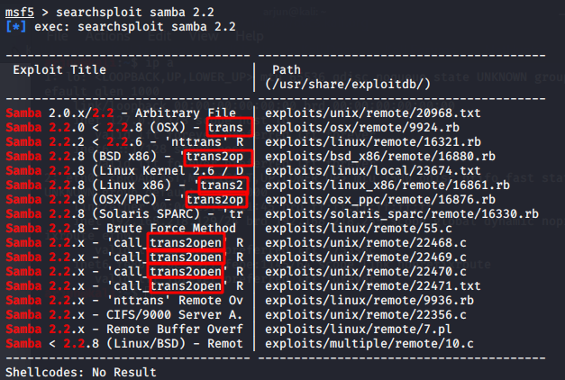

Off the kioptrix box
searchsploit samba 2.2 (version number obtained from scanning and enumeration)

searchsploit trans2open
Setting target:
Running fails, change payload:
Running again, gives us root: